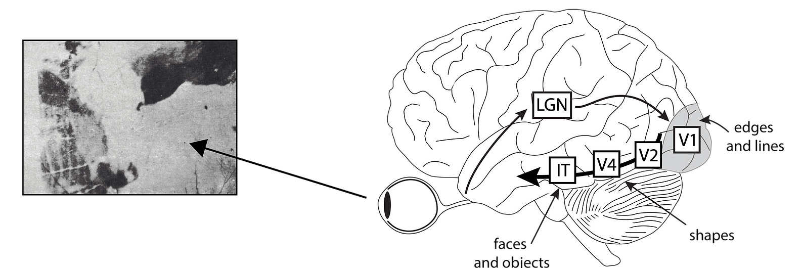

Research
Object recognition seems an effortless task. We just open our eyes and the objects are there. However, it is such a complex task that — after more than a century of research — even the fundamental principles of object recognition are not yet fully understood.

How do we perceive a coherent visual world?
As if this were not problematic enough, our visual world is constantly dynamic and cluttered. We have frequent eye movements, and scenes are congested with visual features and objects that are often themselves changing. The enormous amount of information should easily overwhelm our visual system's limited capacity. Fortunately, the visual system has evolved sophisticated mechanisms that organize and stabilize our visual interpretations of world, turning discontinuous and chaotic retinal images into coherent visual percepts.
The Manassi lab investigates two important principles of visual processing that let us achieve a coherent visual world: Organization and Stabilization.
Organization
How our visual system organizes cluttered visual input into a more global, organized representation — studied through the lens of visual crowding.
Stabilization
How serial dependencies stabilize our percept of the world across time, despite discontinuous and distorted visual input.